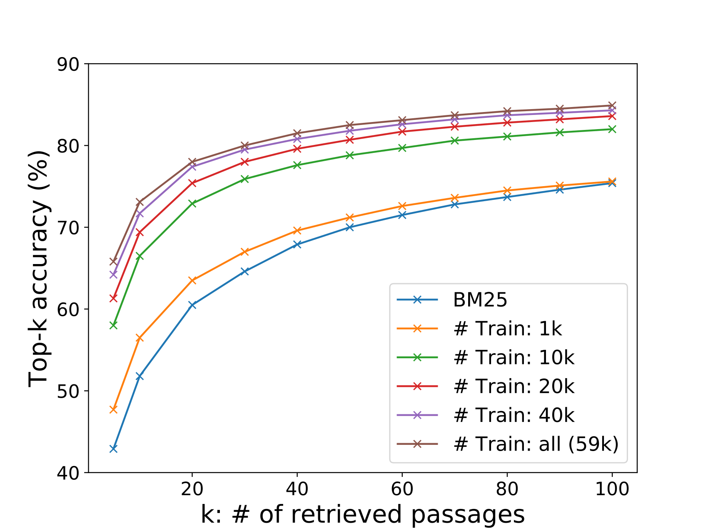

Dense Passage Retrieval for Open-Domain Question Answering / 全文中英对照¶
来源：EMNLP 2020 正式论文，正文对照采用 arXiv v3 的 HTML 转换文本。英文段落后紧接中文，覆盖主文、附录 A–D、图表、脚注、致谢与参考文献；公式、数字和书目信息共用。中文由机器初译后逐段重新校订，整理了术语、遗漏英文与图表说明；未经过独立人工审定。明确标为“译注”的内容是对原文歧义及转换损失的说明。原作归作者及相应权利人所有；ACL 正式出版版本按 CC BY 4.0 发布，本对照稿包含中文翻译和排版改写，许可依据见正式论文页面页脚，不能把 arXiv 的分发许可等同于这一授权。
Authors and affiliations / 作者与机构¶
Vladimir Karpukhin Thanks: Equal contribution Barlas Oğuz 11 Sewon Min Affiliation: University of Washington Patrick Lewis Ledell Wu Sergey Edunov Danqi Chen Affiliation: Princeton University {vladk, barlaso, plewis, ledell, edunov, scottyih}@fb.comsewon@cs.washington.edudanqic@cs.princeton.edu Wen-tau Yih Facebook AI
作者与机构：Vladimir Karpukhin、Barlas Oğuz（共同贡献）、Sewon Min（University of Washington）、Patrick Lewis、Ledell Wu、Sergey Edunov、Danqi Chen（Princeton University）、Wen-tau Yih；其余作者机构为 Facebook AI。
Abstract / 摘要¶
EN. Open-domain question answering relies on efficient passage retrieval to select candidate contexts, where traditional sparse vector space models, such as TF-IDF or BM25, are the de facto method. In this work, we show that retrieval can be practically implemented using dense representations alone, where embeddings are learned from a small number of questions and passages by a simple dual-encoder framework. When evaluated on a wide range of open-domain QA datasets, our dense retriever outperforms a strong Lucene-BM25 system greatly by 9%-19% absolute in terms of top-20 passage retrieval accuracy, and helps our end-to-end QA system establish new state-of-the-art on multiple open-domain QA benchmarks. 1
中. 开放域问答依靠高效的段落检索来选择候选上下文，TF-IDF、BM25 等传统稀疏向量空间模型一直是主流方法。本文表明，仅使用稠密表示也能实现实用的检索：通过简单的双编码器框架，从少量问题—段落对中学习嵌入。在多种开放域问答数据集上，本文的稠密检索器在 Top-20 段落检索准确率上，比强 Lucene-BM25 基线高出 9–19 个百分点，并帮助端到端问答系统在多个开放域问答基准上取得新的最佳结果。1
Introduction / 引言¶
EN. Open-domain question answering (QA) Voorhees 1999 is a task that answers factoid questions using a large collection of documents. While early QA systems are often complicated and consist of multiple components ( Ferrucci 2012 ; Moldovan et al. 2003 , inter alia ), the advances of reading comprehension models suggest a much simplified two-stage framework: (1) a context retriever first selects a small subset of passages where some of them contain the answer to the question, and then (2) a machine reader can thoroughly examine the retrieved contexts and identify the correct answer Chen et al. 2017 . Although reducing open-domain QA to machine reading is a very reasonable strategy, a huge performance degradation is often observed in practice 2 , indicating the needs of improving retrieval.
中. 开放域问答（QA；Voorhees，1999）要求系统利用大规模文档集合回答事实型问题。早期问答系统往往结构复杂，包含多个组件（Ferrucci，2012；Moldovan 等，2003）。随着阅读理解模型的发展，可以采用简化的两阶段框架：首先由上下文检索器选择一个较小的段落集合，其中部分段落包含答案；随后由机器阅读器仔细分析检索到的上下文，识别正确答案（Chen 等，2017）。虽然将开放域问答转化为机器阅读十分合理，但实践中常出现很大的性能下降2，说明检索能力仍需改进。
EN. Retrieval in open-domain QA is usually implemented using TF-IDF or BM25 Robertson and Zaragoza 2009 , which matches keywords efficiently with an inverted index and can be seen as representing the question and context in high-dimensional, sparse vectors (with weighting). Conversely, the dense , latent semantic encoding is complementary to sparse representations by design. For example, synonyms or paraphrases that consist of completely different tokens may still be mapped to vectors close to each other. Consider the question “Who is the bad guy in lord of the rings?” , which can be answered from the context “Sala Baker is best known for portraying the villain Sauron in the Lord of the Rings trilogy.” A term-based system would have difficulty retrieving such a context, while a dense retrieval system would be able to better match “bad guy” with “villain” and fetch the correct context. Dense encodings are also learnable by adjusting the embedding functions, which provides additional flexibility to have a task-specific representation. With special in-memory data structures and indexing schemes, retrieval can be done efficiently using maximum inner product search (MIPS) algorithms (e.g., Shrivastava and Li 2014 ; Guo et al. 2016 ).
中. 开放域问答通常使用 TF-IDF 或 BM25（Robertson 和 Zaragoza，2009）检索，以倒排索引高效匹配关键词；这相当于用带权的高维稀疏向量表示问题和上下文。相比之下，稠密的潜在语义编码在设计上与稀疏表示互补。例如，即使同义表达或释义使用完全不同的词，也可能被映射到相近的向量。问题“《指环王》中的坏人是谁？”可以由“萨拉·贝克最知名的角色是在《指环王》三部曲中饰演反派索伦”这段上下文回答。词项匹配系统可能难以召回它，而稠密检索系统可以更好地匹配 “bad guy” 与 “villain”，找到正确上下文。稠密编码还可以通过调整嵌入函数学习，从而灵活地形成任务专用表示。借助专门的内存数据结构和索引方案，最大内积搜索（MIPS）算法可以高效完成检索，例如 Shrivastava 和 Li（2014）、Guo 等（2016）的工作。
EN. However, it is generally believed that learning a good dense vector representation needs a large number of labeled pairs of question and contexts. Dense retrieval methods have thus never be shown to outperform TF-IDF/BM25 for open-domain QA before ORQA Lee et al. 2019 , which proposes a sophisticated inverse cloze task (ICT) objective, predicting the blocks that contain the masked sentence, for additional pretraining. The question encoder and the reader model are then fine-tuned using pairs of questions and answers jointly. Although ORQA successfully demonstrates that dense retrieval can outperform BM25, setting new state-of-the-art results on multiple open-domain QA datasets, it also suffers from two weaknesses. First, ICT pretraining is computationally intensive and it is not completely clear that regular sentences are good surrogates of questions in the objective function. Second, because the context encoder is not fine-tuned using pairs of questions and answers, the corresponding representations could be suboptimal.
中. 不过，人们通常认为，学习良好的稠密向量表示需要大量标注的问题—上下文对。因此，在 ORQA（Lee 等，2019）之前，稠密检索尚未被证明能在开放域问答中超过 TF-IDF/BM25。ORQA 提出较复杂的逆完形填空任务（ICT），通过预测包含被遮蔽句子的文本块进行额外预训练，再利用问题—答案对联合微调问题编码器和阅读器。虽然 ORQA 成功证明稠密检索可以优于 BM25，并在多个开放域问答数据集上取得新的最佳结果，但仍有两个不足。首先，ICT 预训练计算开销大，而且普通句子是否适合作为目标函数中的问题替代物并不完全清楚。其次，上下文编码器没有用问题—答案对微调，其表示可能并非最优。
EN. In this paper, we address the question: can we train a better dense embedding model using only pairs of questions and passages (or answers), without additional pretraining? By leveraging the now standard BERT pretrained model Devlin et al. 2019 and a dual-encoder architecture Bromley et al. 1994 , we focus on developing the right training scheme using a relatively small number of question and passage pairs. Through a series of careful ablation studies, our final solution is surprisingly simple: the embedding is optimized for maximizing inner products of the question and relevant passage vectors, with an objective comparing all pairs of questions and passages in a batch. Our Dense Passage Retriever (DPR) is exceptionally strong. It not only outperforms BM25 by a large margin (65.2% vs. 42.9% in Top-5 accuracy), but also results in a substantial improvement on the end-to-end QA accuracy compared to ORQA (41.5% vs. 33.3%) in the open Natural Questions setting Lee et al. 2019 ; Kwiatkowski et al. 2019 .
中. 本文研究：能否不做额外预训练，仅利用问题—段落或问题—答案对训练更好的稠密嵌入模型？我们采用已成为标准的预训练 BERT（Devlin 等，2019）和双编码器架构（Bromley 等，1994），重点探索如何利用相对少量的问题—段落对制定合适的训练方案。一系列仔细的消融实验最终得到一个十分简单的方案：优化问题与相关段落向量的内积，并在目标函数中比较同一 batch 内所有问题—段落配对。所得稠密段落检索器（DPR）表现很强：不仅大幅超过 BM25（Top-5 准确率为 65.2% 对 42.9%），而且在开放域 Natural Questions 设置下，相比 ORQA 显著提高端到端问答准确率（41.5% 对 33.3%；Lee 等，2019；Kwiatkowski 等，2019）。
EN. Our contributions are twofold. First, we demonstrate that with the proper training setup, simply fine-tuning the question and passage encoders on existing question-passage pairs is sufficient to greatly outperform BM25. Our empirical results also suggest that additional pretraining may not be needed. Second, we verify that, in the context of open-domain question answering, a higher retrieval precision indeed translates to a higher end-to-end QA accuracy. By applying a modern reader model to the top retrieved passages, we achieve comparable or better results on multiple QA datasets in the open-retrieval setting, compared to several, much complicated systems.
中. 本文有两方面贡献。首先，证明只要训练设置合适，在现成的问题—段落对上微调问题与段落编码器，就足以显著超过 BM25；实验还表明可能无需额外预训练。其次，验证在开放域问答中，更高的检索精度确实能转化为更高的端到端问答准确率。对检索排名靠前的段落使用现代阅读器后，在多个开放检索问答数据集上，我们取得了与若干复杂得多的系统相当或更好的结果。
Background / 背景¶
EN. The problem of open-domain QA studied in this paper can be described as follows. Given a factoid question, such as “ Who first voiced Meg on Family Guy? ” or “ Where was the 8th Dalai Lama born? ”, a system is required to answer it using a large corpus of diversified topics. More specifically, we assume the extractive QA setting, in which the answer is restricted to a span appearing in one or more passages in the corpus. Assume that our collection contains \(D\) documents, \(d_{1},d_{2},\cdots,d_{D}\) . We first split each of the documents into text passages of equal lengths as the basic retrieval units 3 and get \(M\) total passages in our corpus \(\mathcal{C}=\{p_{1},p_{2},\ldots,p_{M}\}\) , where each passage \(p_{i}\) can be viewed as a sequence of tokens \(w^{(i)}_{1},w^{(i)}_{2},\cdots,w^{(i)}_{|p_{i}|}\) . Given a question \(q\) , the task is to find a span \(w^{(i)}_{s},w^{(i)}_{s+1},\cdots,w^{(i)}_{e}\) from one of the passages \(p_{i}\) that can answer the question. Notice that to cover a wide variety of domains, the corpus size can easily range from millions of documents (e.g., Wikipedia) to billions (e.g., the Web). As a result, any open-domain QA system needs to include an efficient retriever component that can select a small set of relevant texts, before applying the reader to extract the answer Chen et al. 2017 . 4 Formally speaking, a retriever \(R:(q,\mathcal{C})\rightarrow\mathcal{C_{F}}\) is a function that takes as input a question \(q\) and a corpus \(\mathcal{C}\) and returns a much smaller filter set of texts \(\mathcal{C_{F}}\subset\mathcal{C}\) , where \(|\mathcal{C_{F}}|=k\ll|\mathcal{C}|\) . For a fixed \(k\) , a retriever can be evaluated in isolation on top-k retrieval accuracy , which is the fraction of questions for which \(\mathcal{C_{F}}\) contains a span that answers the question.
中. 本文的开放域问答问题如下：给定一个事实型问题，例如“谁最早为《恶搞之家》中的 Meg 配音？”或“第八世达赖喇嘛出生在哪里？”，系统需要利用覆盖多种主题的大语料回答。具体采用抽取式问答设定，答案必须是语料某个段落中出现的连续文本片段。假设文档集合包含 \(D\) 篇文档 \(d_{1},d_{2},\cdots,d_{D}\)，先把各文档切成等长段落作为基本检索单元3，得到共 \(M\) 个段落的语料 \(\mathcal{C}=\{p_{1},p_{2},\ldots,p_{M}\}\)；每段 \(p_i\) 可以看作 token 序列 \(w^{(i)}_{1},w^{(i)}_{2},\cdots,w^{(i)}_{|p_i|}\)。给定问题 \(q\)，任务是在某段 \(p_i\) 中找到能回答问题的片段 \(w^{(i)}_{s},w^{(i)}_{s+1},\cdots,w^{(i)}_{e}\)。为了覆盖广泛领域，语料可以达到数百万篇文档（如 Wikipedia）乃至数十亿篇（如 Web）。因此，开放域问答系统需要高效检索器，在阅读器抽取答案之前选出一小部分相关文本（Chen 等，2017）4。形式上，检索器 \(R:(q,\mathcal C)\rightarrow\mathcal C_F\) 输入问题与语料，输出较小的筛选集合 \(\mathcal C_F\subset\mathcal C\)，其中 \(|\mathcal C_F|=k\ll|\mathcal C|\)。固定 \(k\) 后，可以用 Top-k 检索准确率独立评测检索器，即筛选集合中包含可回答问题的答案片段的问题比例。
Dense Passage Retriever (DPR) / 稠密段落检索器（DPR）¶
EN. We focus our research in this work on improving the retrieval component in open-domain QA. Given a collection of \(M\) text passages, the goal of our dense passage retriever (DPR) is to index all the passages in a low-dimensional and continuous space, such that it can retrieve efficiently the top \(k\) passages relevant to the input question for the reader at run-time. Note that \(M\) can be very large (e.g., 21 million passages in our experiments, described in Section 4.1 ) and \(k\) is usually small, such as \(20\) – \(100\) .
中. 本文重点改进开放域问答的检索组件。给定 \(M\) 个文本段落，DPR 的目标是在低维连续空间中为所有段落建立索引，使运行时能够高效找出与输入问题相关的前 \(k\) 个段落，交给阅读器。\(M\) 可能很大，例如第 4.1 节实验中的 2100 万段；\(k\) 通常较小，例如 20–100。
Overview / 概述¶
EN. Our dense passage retriever (DPR) uses a dense encoder \(E_{P}(\cdot)\) which maps any text passage to a \(d\) -dimensional real-valued vectors and builds an index for all the \(M\) passages that we will use for retrieval. At run-time, DPR applies a different encoder \(E_{Q}(\cdot)\) that maps the input question to a \(d\) -dimensional vector, and retrieves \(k\) passages of which vectors are the closest to the question vector. We define the similarity between the question and the passage using the dot product of their vectors:
中. DPR 使用稠密编码器 \(E_P(\cdot)\)，将任意文本段落映射为 \(d\) 维实值向量，并为全部 \(M\) 个待检索段落建立索引。运行时使用另一个编码器 \(E_Q(\cdot)\) 将输入问题映射为 \(d\) 维向量，再检索与问题向量最接近的 \(k\) 个段落。问题与段落的相似度定义为其向量内积：
EN. Although more expressive model forms for measuring the similarity between a question and a passage do exist, such as networks consisting of multiple layers of cross attentions, the similarity function needs to be decomposable so that the representations of the collection of passages can be pre-computed. Most decomposable similarity functions are some transformations of Euclidean distance (L2). For instance, cosine is equivalent to inner product for unit vectors and the Mahalanobis distance is equivalent to L2 distance in a transformed space. Inner product search has been widely used and studied, as well as its connection to cosine similarity and L2 distance Mussmann and Ermon 2016 ; Ram and Gray 2012 . As our ablation study finds other similarity functions perform comparably (Section 5.2 ; Appendix B ), we thus choose the simpler inner product function and improve the dense passage retriever by learning better encoders.
中. 虽然多层交叉注意力网络等模型能更有表现力地度量问题—段落相似度，但为了预计算段落集合的表示，相似度函数必须可分解。大多数可分解相似度函数可以视为欧氏距离（L2）的某种变换。例如，对于单位向量，cosine 等价于内积；马氏距离则等价于变换空间中的 L2 距离。内积搜索及其与 cosine、L2 的关系已有广泛应用和研究（Mussmann 和 Ermon，2016；Ram 和 Gray，2012）。消融发现其他相似度函数表现相近（第 5.2 节、附录 B），因此本文选择更简单的内积，把改进重点放在学习更好的编码器上。
Encoders / 编码器¶
EN. Although in principle the question and passage encoders can be implemented by any neural networks, in this work we use two independent BERT Devlin et al. 2019 networks (base, uncased) and take the representation at the [CLS] token as the output, so \(d=768\) .
中. 原则上，问题和段落编码器可以使用任意神经网络；本文使用两个独立的 BERT 网络（Devlin 等，2019），均为 base、uncased 版本，并以 [CLS] token 的表示作为输出，因此 \(d=768\)。
Inference / 推理¶
EN. During inference time, we apply the passage encoder \(E_{P}\) to all the passages and index them using FAISS Johnson et al. 2017 offline. FAISS is an extremely efficient, open-source library for similarity search and clustering of dense vectors, which can easily be applied to billions of vectors. Given a question \(q\) at run-time, we derive its embedding \(v_{q}=E_{Q}(q)\) and retrieve the top \(k\) passages with embeddings closest to \(v_{q}\) .
中. 推理前，离线用段落编码器 \(E_P\) 编码全部段落，并以 FAISS（Johnson 等，2017）建立索引。FAISS 是用于稠密向量相似度搜索和聚类的高效开源库，可扩展到数十亿向量。运行时给定问题 \(q\)，计算嵌入 \(v_q=E_Q(q)\)，再返回与它最接近的前 \(k\) 个段落。
Training / 训练¶
EN. Training the encoders so that the dot-product similarity (Eq. ( 1 )) becomes a good ranking function for retrieval is essentially a metric learning problem Kulis 2013 . The goal is to create a vector space such that relevant pairs of questions and passages will have smaller distance (i.e., higher similarity) than the irrelevant ones, by learning a better embedding function.
中. 训练编码器，使内积相似度（式 1）成为良好的检索排序函数，本质上是度量学习问题（Kulis，2013）。目标是学习更好的嵌入函数，构造一个向量空间，让相关问题—段落对比不相关对距离更近，即相似度更高。
EN. Let \(\mathcal{D}=\{\langle q_{i},p^{+}_{i},p^{-}_{i,1},\cdots,p^{-}_{i,n}\rangle\}_{i=1}^{m}\) be the training data that consists of \(m\) instances. Each instance contains one question \(q_{i}\) and one relevant (positive) passage \(p^{+}_{i}\) , along with \(n\) irrelevant (negative) passages \(p^{-}_{i,j}\) . We optimize the loss function as the negative log likelihood of the positive passage:
中. 设训练集为 \(\mathcal D=\{\langle q_i,p_i^+,p_{i,1}^-,\cdots,p_{i,n}^-\rangle\}_{i=1}^m\)，共含 \(m\) 个样本。每个样本包含一个问题 \(q_i\)、一个相关的正段落 \(p_i^+\)，以及 \(n\) 个不相关的负段落 \(p_{i,j}^-\)。优化目标为正段落的负对数似然：
Positive and negative passages / 正段落与负段落¶
EN. For retrieval problems, it is often the case that positive examples are available explicitly, while negative examples need to be selected from an extremely large pool. For instance, passages relevant to a question may be given in a QA dataset, or can be found using the answer. All other passages in the collection, while not specified explicitly, can be viewed as irrelevant by default. In practice, how to select negative examples is often overlooked but could be decisive for learning a high-quality encoder. We consider three different types of negatives: (1) Random: any random passage from the corpus; (2) BM25: top passages returned by BM25 which don’t contain the answer but match most question tokens; (3) Gold: positive passages paired with other questions which appear in the training set. We will discuss the impact of different types of negative passages and training schemes in Section 5.2 . Our best model uses gold passages from the same mini-batch and one BM25 negative passage. In particular, re-using gold passages from the same batch as negatives can make the computation efficient while achieving great performance. We discuss this approach below.
中. 检索任务中，正例通常明确可得，负例却需要从极大的候选池中选择。例如，问答数据集可能直接提供相关段落，也可以利用答案寻找段落。集合中的其他段落虽然没有明确标注，通常默认视为不相关。实际中，负例选择常被忽视，却可能决定能否学到高质量编码器。本文考察三类负例：（1）Random：从语料随机抽取段落；（2）BM25：BM25 返回的高排名段落，匹配问题中的许多词，但不含答案；（3）Gold：训练集中其他问题对应的正段落。第 5.2 节讨论不同负例和训练方案的影响。最佳模型使用同一 mini-batch 中其他问题的 Gold 段落，以及一个 BM25 负段落。特别是，把同批 Gold 段落复用为负例，可以兼顾计算效率与效果，下面详细说明。
In-batch negatives / 同批负例¶
EN. Assume that we have \(B\) questions in a mini-batch and each one is associated with a relevant passage. Let \(\mathbf{Q}\) and \(\mathbf{P}\) be the \((B\times d)\) matrix of question and passage embeddings in a batch of size \(B\) . \(\mathbf{S}=\mathbf{Q}\mathbf{P}^{T}\) is a \((B\times B)\) matrix of similarity scores, where each row of which corresponds to a question, paired with \(B\) passages. In this way, we reuse computation and effectively train on \(B^{2}\) ( \(q_{i}\) , \(p_{j}\) ) question/passage pairs in each batch. Any ( \(q_{i}\) , \(p_{j}\) ) pair is a positive example when \(i=j\) , and negative otherwise. This creates \(B\) training instances in each batch, where there are \(B-1\) negative passages for each question.
中. 假设一个 mini-batch 有 \(B\) 个问题，每个问题对应一个相关段落。令 \(\mathbf Q\) 与 \(\mathbf P\) 为问题和段落嵌入矩阵，形状均为 \(B\times d\)。相似度矩阵 \(\mathbf S=\mathbf Q\mathbf P^T\) 的形状为 \(B\times B\)，每一行对应一个问题与 \(B\) 个段落的得分。这样便复用了计算，在每个 batch 中实际利用 \(B^2\) 个问题—段落配对 \((q_i,p_j)\) 训练。当 \(i=j\) 时配对为正例，否则为负例。每个 batch 由此得到 \(B\) 个训练样本，每个问题有 \(B-1\) 个负段落。
EN. The trick of in-batch negatives has been used in the full batch setting Yih et al. 2011 and more recently for mini-batch Henderson et al. 2017 ; Gillick et al. 2019 . It has been shown to be an effective strategy for learning a dual-encoder model that boosts the number of training examples.
中. 同批负例技巧早已用于 full-batch 设置（Yih 等，2011），近来也用于 mini-batch（Henderson 等，2017；Gillick 等，2019）。它通过增加训练配对数量，已被证明是一种有效的双编码器学习策略。
Experimental Setup / 实验设置¶
EN. In this section, we describe the data we used for experiments and the basic setup.
中. 本节介绍实验数据与基本设置。
Wikipedia Data Pre-processing / 维基百科数据预处理¶
EN. Following Lee et al. 2019 , we use the English Wikipedia dump from Dec. 20, 2018 as the source documents for answering questions. We first apply the pre-processing code released in DrQA Chen et al. 2017 to extract the clean, text-portion of articles from the Wikipedia dump. This step removes semi-structured data, such as tables, info-boxes, lists, as well as the disambiguation pages. We then split each article into multiple, disjoint text blocks of 100 words as passages , serving as our basic retrieval units, following Wang et al. 2019 , which results in 21,015,324 passages in the end. 5 Each passage is also prepended with the title of the Wikipedia article where the passage is from, along with an [SEP] token.
中. 沿用 Lee 等（2019），本文将 2018 年 12 月 20 日的英文 Wikipedia 快照作为问答文档来源。先使用 DrQA（Chen 等，2017）发布的预处理代码抽取文章的纯净正文，去掉表格、信息框、列表等半结构化内容和消歧页。再沿用 Wang 等（2019），把每篇文章切成多个互不重叠的 100-word 文本块，作为基本检索段落，最终得到 21,015,324 个段落5。每段前还拼接所属 Wikipedia 文章的标题，并以 [SEP] token 分隔。
Question Answering Datasets / 问答数据集¶
EN. We use the same five QA datasets and training/dev/testing splitting method as in previous work Lee et al. 2019 . Below we briefly describe each dataset and refer readers to their paper for the details of data preparation.
中. 本文采用与 Lee 等（2019）相同的五个问答数据集及训练、开发、测试划分。下面简要介绍各数据集，数据准备细节见相应原论文。
EN. Natural Questions (NQ) Kwiatkowski et al. 2019 was designed for end-to-end question answering. The questions were mined from real Google search queries and the answers were spans in Wikipedia articles identified by annotators.
中. Natural Questions（NQ；Kwiatkowski 等，2019）面向端到端问答。问题来自真实的 Google 搜索查询，答案是标注者在 Wikipedia 文章中识别出的文本片段。
EN. TriviaQA Joshi et al. 2017 contains a set of trivia questions with answers that were originally scraped from the Web.
中. TriviaQA（Joshi 等，2017）包含从 Web 收集的知识问答及答案。
EN. WebQuestions (WQ) Berant et al. 2013 consists of questions selected using Google Suggest API, where the answers are entities in Freebase.
中. WebQuestions（WQ；Berant 等，2013）中的问题通过 Google Suggest API 选取，答案是 Freebase 实体。
EN. CuratedTREC (TREC) Baudiš and Šedivỳ 2015 sources questions from TREC QA tracks as well as various Web sources and is intended for open-domain QA from unstructured corpora.
中. CuratedTREC（TREC；Baudiš 和 Šedivỳ，2015）的问题来自 TREC QA 评测及多种 Web 来源，面向非结构化语料上的开放域问答。
EN. SQuAD v1.1 Rajpurkar et al. 2016 is a popular benchmark dataset for reading comprehension. Annotators were presented with a Wikipedia paragraph, and asked to write questions that could be answered from the given text. Although SQuAD has been used previously for open-domain QA research, it is not ideal because many questions lack context in absence of the provided paragraph. We still include it in our experiments for providing a fair comparison to previous work and we will discuss more in Section 5.1 .
中. SQuAD v1.1（Rajpurkar 等，2016）是广泛使用的阅读理解基准。标注者看到 Wikipedia 段落后，编写能够从该段落回答的问题。虽然此前开放域问答研究也使用 SQuAD，但它并不理想，因为脱离给定段落后，许多问题会缺乏必要上下文。本文仍纳入它以便与前人公平比较，并在第 5.1 节进一步讨论。
Selection of positive passages / 正段落选择¶
EN. Because only pairs of questions and answers are provided in TREC, WebQuestions and TriviaQA 6 , we use the highest-ranked passage from BM25 that contains the answer as the positive passage. If none of the top 100 retrieved passages has the answer, the question will be discarded. For SQuAD and Natural Questions, since the original passages have been split and processed differently than our pool of candidate passages, we match and replace each gold passage with the corresponding passage in the candidate pool. 7 We discard the questions when the matching is failed due to different Wikipedia versions or pre-processing. Table 1 shows the number of questions in training/dev/test sets for all the datasets and the actual questions used for training the retriever.
中. 由于 TREC、WebQuestions 和 TriviaQA 仅提供问题—答案对6，本文取 BM25 返回结果中排名最高且包含答案的段落作为正例。如果前 100 个段落都不含答案，就丢弃该问题。对 SQuAD 和 NQ，原始段落的切分和预处理与候选语料不同，因此将标注正段落匹配、替换为候选池中的对应段落7；若因 Wikipedia 版本或预处理差异匹配失败，也丢弃该问题。Table 1 列出各数据集的训练、开发、测试问题数，以及最终实际用于检索器训练的问题数。
| Dataset 数据集 |
Train 训练 |
Train 训练 |
Dev 开发 |
Test 测试 |
|---|---|---|---|---|
| Natural Questions | 79,168 | 58,880 | 8,757 | 3,610 |
| TriviaQA 问答问答 |
78,785 | 60,413 | 8,837 | 11,313 |
| WebQuestions | 3,417 | 2,474 | 361 | 2,032 |
| CuratedTREC | 1,353 | 1,125 | 133 | 694 |
| SQuAD | 78,713 | 70,096 | 8,886 | 10,570 |
EN. Table 1: Number of questions in each QA dataset. The two columns of Train denote the original training examples in the dataset and the actual questions used for training DPR after filtering. See text for more details.
中. 表 1：各问答数据集的问题数量。两个 Train 列分别表示原始训练样本数，以及过滤后实际用于 DPR 训练的问题数；详见正文。
| Training 训练 |
Retriever 检索器 |
Top-20 前20名 |
Top-20 前20名 |
Top-20 前20名 |
Top-20 前20名 |
Top-20 前20名 |
Top-100 前100名 |
Top-100 前100名 |
Top-100 前100名 |
Top-100 前100名 |
Top-100 前100名 |
|---|---|---|---|---|---|---|---|---|---|---|---|
| NQ 网Q |
TriviaQA 问答问答 |
WQ | TREC 特雷克 |
SQuAD | NQ 网Q |
TriviaQA 问答问答 |
WQ | TREC 特雷克 |
SQuAD | ||
| None 无训练 |
BM25 | 59.1 | 66.9 | 55.0 | 70.9 | 68.8 | 73.7 | 76.7 | 71.1 | 84.1 | 80.0 |
| Single 单数据集 |
DPR | 78.4 | 79.4 | 73.2 | 79.8 | 63.2 | 85.4 | 85.0 | 81.4 | 89.1 | 77.2 |
| Single 单数据集 |
BM25 + DPR | 76.6 | 79.8 | 71.0 | 85.2 | 71.5 | 83.8 | 84.5 | 80.5 | 92.7 | 81.3 |
| Multi 多数据集 |
DPR | 79.4 | 78.8 | 75.0 | 89.1 | 51.6 | 86.0 | 84.7 | 82.9 | 93.9 | 67.6 |
| Multi 多数据集 |
BM25 + DPR | 78.0 | 79.9 | 74.7 | 88.5 | 66.2 | 83.9 | 84.4 | 82.3 | 94.1 | 78.6 |
EN. Table 2: Top-20 & Top-100 retrieval accuracy on test sets, measured as the percentage of top 20/100 retrieved passages that contain the answer. Single and Multi denote that our Dense Passage Retriever (DPR) was trained using individial or combined training datasets (all the datasets excluding SQuAD). See text for more details.
中. 表 2：测试集上的 Top-20 与 Top-100 检索准确率。原 caption 将其表述为前 20/100 个检索段落中含答案的百分比；按正文定义，指标实际统计前 20/100 个候选中至少一段含答案的问题比例。Single 与 Multi 分别表示使用单个数据集或合并数据集（除 SQuAD 外全部数据集）训练 DPR。详见正文。【译注：补充了与正文一致的统计单位，避免将其误读为段落 precision。】
Experiments: Passage Retrieval / 实验：段落检索¶
EN. In this section, we evaluate the retrieval performance of our Dense Passage Retriever (DPR), along with analysis on how its output differs from traditional retrieval methods, the effects of different training schemes and the run-time efficiency.
中. 本节评估 DPR 的检索表现，分析它与传统检索方法输出的差异、不同训练方案的影响，以及运行效率。
EN. The DPR model used in our main experiments is trained using the in-batch negative setting (Section 3.2 ) with a batch size of \(128\) and one additional BM25 negative passage per question. We trained the question and passage encoders for up to \(40\) epochs for large datasets (NQ, TriviaQA, SQuAD) and \(100\) epochs for small datasets (TREC, WQ), with a learning rate of \(10^{-5}\) using Adam, linear scheduling with warm-up and dropout rate \(0.1\) .
中. 主实验的 DPR 使用第 3.2 节的同批负例训练，batch size 为 128，每个问题另加入一个 BM25 负段落。对大数据集（NQ、TriviaQA、SQuAD），问题和段落编码器最多训练 40 个 epoch；小数据集（TREC、WQ）最多训练 100 个 epoch。采用 Adam，学习率为 \(10^{-5}\)，使用带 warm-up 的线性调度，dropout 为 0.1。
EN. While it is good to have the flexibility to adapt the retriever to each dataset, it would also be desirable to obtain a single retriever that works well across the board. To this end, we train a multi -dataset encoder by combining training data from all datasets excluding SQuAD. 8 In addition to DPR, we also present the results of BM25, the traditional retrieval method 9 and BM25+DPR, using a linear combination of their scores as the new ranking function. Specifically, we obtain two initial sets of top-2000 passages based on BM25 and DPR, respectively, and rerank the union of them using BM25( \(q\) , \(p\) ) + \(\lambda\cdot\mathrm{sim}(q,p)\) as the ranking function. We used \(\lambda=1.1\) based on the retrieval accuracy in the development set.
中. 除了针对各数据集适配检索器，作者也希望得到一个跨数据集表现良好的统一检索器。为此，合并除 SQuAD 外的所有训练集，训练 Multi 编码器8。除 DPR 外，还报告传统 BM259以及 BM25+DPR，后者用两者得分的线性组合作为新排序函数。具体地，BM25、DPR 各自取前 2000 个段落，对其并集按 \(\mathrm{BM25}(q,p)+\lambda\cdot\mathrm{sim}(q,p)\) 重排。根据开发集检索准确率选择 \(\lambda=1.1\)。
Main Results / 主要结果¶
EN. Table 2 compares different passage retrieval systems on five QA datasets, using the top- \(k\) accuracy ( \(k\in\{20,100\}\) ). With the exception of SQuAD, DPR performs consistently better than BM25 on all datasets. The gap is especially large when \(k\) is small (e.g., 78.4% vs. 59.1% for top-20 accuracy on Natural Questions). When training with multiple datasets, TREC, the smallest dataset of the five, benefits greatly from more training examples. In contrast, Natural Questions and WebQuestions improve modestly and TriviaQA degrades slightly. Results can be improved further in some cases by combining DPR with BM25 in both single- and multi-dataset settings.
中. Table 2 用 Top-k 准确率（\(k\in\{20,100\}\)）比较五个问答数据集上的段落检索系统。除 SQuAD 外，DPR 在所有数据集上都优于 BM25；当 \(k\) 较小时差距尤其大，例如 NQ 的 Top-20 为 78.4% 对 59.1%。多数据集训练显著帮助了五者中最小的 TREC。相比之下，NQ 和 WQ 仅小幅改善，TriviaQA 略有下降。在 Single 和 Multi 设置中，将 DPR 与 BM25 结合，都能在部分情况下进一步改善结果。
EN. We conjecture that the lower performance on SQuAD is due to two reasons. First, the annotators wrote questions after seeing the passage. As a result, there is a high lexical overlap between passages and questions, which gives BM25 a clear advantage. Second, the data was collected from only 500+ Wikipedia articles and thus the distribution of training examples is extremely biased, as argued previously by Lee et al. 2019 .
中. 我们推测 SQuAD 表现较低有两个原因。首先，标注者先看段落再写问题，导致问题与段落的词面重叠很高，使 BM25 占明显优势。其次，数据仅来自五百多篇 Wikipedia 文章，训练样本分布存在很强偏置，这一点 Lee 等（2019）此前也曾讨论。

EN. Figure 1: Retriever top- \(k\) accuracy with different numbers of training examples used in our dense passage retriever vs BM25. The results are measured on the development set of Natural Questions. Our DPR trained using 1,000 examples already outperforms BM25.
中. 图 1：采用不同训练样本数的 DPR 与 BM25 的 Top-k 检索准确率，在 NQ 开发集上评测。仅用 1,000 个样本训练的 DPR 就已超过 BM25。
Ablation Study on Model Training / 模型训练的消融研究¶
EN. To understand further how different model training options affect the results, we conduct several additional experiments and discuss our findings below.
中. 为进一步理解不同模型训练选项对结果的影响，我们开展了额外实验，下面讨论其发现。
Sample efficiency / 样本效率¶
EN. We explore how many training examples are needed to achieve good passage retrieval performance. Figure 1 illustrates the top- \(k\) retrieval accuracy with respect to different numbers of training examples, measured on the development set of Natural Questions. As is shown, a dense passage retriever trained using only 1,000 examples already outperforms BM25. This suggests that with a general pretrained language model, it is possible to train a high-quality dense retriever with a small number of question–passage pairs. Adding more training examples (from 1k to 59k) further improves the retrieval accuracy consistently.
中. 我们研究获得良好段落检索性能需要多少训练样本。Figure 1 展示使用不同数量样本训练时，在 NQ 开发集上的 Top-k 检索准确率。如图所示，仅用 1,000 个样本训练的 DPR 已优于 BM25。这说明有通用预训练语言模型作为基础时，少量问题—段落对也可能训练出高质量稠密检索器。继续增加训练样本，从 1k 到 59k，检索准确率持续提高。
In-batch negative training / 同批负例训练¶
EN. We test different training schemes on the development set of Natural Questions and summarize the results in Table 3 . The top block is the standard 1-of- \(N\) training setting, where each question in the batch is paired with a positive passage and its own set of \(n\) negative passages (Eq. ( 2 )). We find that the choice of negatives — random, BM25 or gold passages (positive passages from other questions) — does not impact the top- \(k\) accuracy much in this setting when \(k\geq 20\) .
中. 我们在 NQ 开发集上测试不同训练方案，结果见 Table 3。第一组是标准 1-of-N 训练：batch 中每个问题对应一个正段落和自己的一组 \(n\) 个负段落（式 2）。在这种设置下，当 \(k\geq20\)，选择随机、BM25 或 Gold（其他问题的正段落）负例，对 Top-k 准确率的影响不大。
EN. The middle bock is the in-batch negative training (Section 3.2 ) setting. We find that using a similar configuration (7 gold negative passages), in-batch negative training improves the results substantially. The key difference between the two is whether the gold negative passages come from the same batch or from the whole training set. Effectively, in-batch negative training is an easy and memory-efficient way to reuse the negative examples already in the batch rather than creating new ones. It produces more pairs and thus increases the number of training examples, which might contribute to the good model performance. As a result, accuracy consistently improves as the batch size grows.
中. 中间一组使用第 3.2 节的同批负例训练。在相似配置下，即同样使用 7 个 Gold 负例，同批负例训练显著改善了结果。两者关键区别是 Gold 负段落来自当前 batch 还是整个训练集。同批训练以简单、节省内存的方式复用已经在 batch 中的负例，而非另外构造新负例；它形成更多配对、增加训练实例数量，这可能是效果更好的原因。随着 batch size 增大，准确率也持续提升。
EN. Finally, we explore in-batch negative training with additional “hard” negative passages that have high BM25 scores given the question, but do not contain the answer string (the bottom block). These additional passages are used as negative passages for all questions in the same batch. We find that adding a single BM25 negative passage improves the result substantially while adding two does not help further.
中. 最后一组在同批训练中加入额外的难负段落：它们对当前问题的 BM25 得分高，但不含答案字符串。这些额外段落也作为同一 batch 内所有问题的负例。每问题加入一个 BM25 负段落能显著改善结果，加入两个却没有进一步收益。
| Type 类型 |
#N | IB | Top-5 前5名 |
Top-20 前20名 |
Top-100 前100名 |
|---|---|---|---|---|---|
| Random 随机 |
7 | ✗ | 47.0 | 64.3 | 77.8 |
| BM25 | 7 | ✗ | 50.0 | 63.3 | 74.8 |
| Gold 标注正段落 |
7 | ✗ | 42.6 | 63.1 | 78.3 |
| Gold 标注正段落 |
7 | ✓ | 51.1 | 69.1 | 80.8 |
| Gold 标注正段落 |
31 | ✓ | 52.1 | 70.8 | 82.1 |
| Gold 标注正段落 |
127 | ✓ | 55.8 | 73.0 | 83.1 |
| G.+BM25 (1) | 31+32 | ✓ | 65.0 | 77.3 | 84.4 |
| G.+BM25 (2) | 31+64 | ✓ | 64.5 | 76.4 | 84.0 |
| G.+BM25 (1) | 127+128 | ✓ | 65.8 | 78.0 | 84.9 |
EN. Table 3: Comparison of different training schemes, measured as top- \(k\) retrieval accuracy on Natural Questions (development set). #N: number of negative examples, IB: in-batch training. G.+BM25 (1) and G.+BM25 (2) denote in-batch training with 1 or 2 additional BM25 negatives, which serve as negative passages for all questions in the batch.
中. 表 3：不同训练方案在 NQ 开发集上的 Top-k 检索准确率。#N 表示负例数量，IB 表示同批训练。G.+BM25 (1) 和 G.+BM25 (2) 分别在同批训练中为每问题加入一个或两个 BM25 负例，这些段落供全 batch 的问题共享。
Impact of gold passages / 标注正段落的影响¶
EN. We use passages that match the gold contexts in the original datasets (when available) as positive examples (Section 4.2 ). Our experiments on Natural Questions show that switching to distantly-supervised passages (using the highest-ranked BM25 passage that contains the answer), has only a small impact: 1 point lower top- \(k\) accuracy for retrieval. Appendix A contains more details.
中. 原数据集提供标注上下文时，我们使用与其匹配的段落作为正例（第 4.2 节）。在 NQ 上改用远程监督段落，即含答案的最高排名 BM25 段落，仅带来较小影响：Top-k 检索准确率约下降一个百分点。细节见附录 A。
Similarity and loss / 相似度与损失¶
EN. Besides dot product, cosine and Euclidean L2 distance are also commonly used as decomposable similarity functions. We test these alternatives and find that L2 performs comparable to dot product, and both of them are superior to cosine. Similarly, in addition to negative log-likelihood, a popular option for ranking is triplet loss, which compares a positive passage and a negative one directly with respect to a question Burges et al. 2005 . Our experiments show that using triplet loss does not affect the results much. More details can be found in Appendix B .
中. 除内积外，cosine 和欧氏 L2 距离也是常用的可分解相似度函数。实验发现 L2 与内积表现相近，二者均优于 cosine。除了负对数似然，排序中常用的 triplet loss 会针对一个问题直接比较正段落与负段落（Burges 等，2005）。实验显示换用 triplet loss 对结果影响也不大。详见附录 B。
Cross-dataset generalization / 跨数据集泛化¶
EN. One interesting question regarding DPR’s discriminative training is how much performance degradation it may suffer from a non-iid setting. In other words, can it still generalize well when directly applied to a different dataset without additional fine-tuning? To test the cross-dataset generalization, we train DPR on Natural Questions only and test it directly on the smaller WebQuestions and CuratedTREC datasets. We find that DPR generalizes well, with 3-5 points loss from the best performing fine-tuned model in top-20 retrieval accuracy (69.9/86.3 vs. 75.0/89.1 for WebQuestions and TREC, respectively), while still greatly outperforming the BM25 baseline (55.0/70.9).
中. DPR 的判别式训练在非独立同分布条件下会下降多少，是一个有趣问题。也就是说，未经额外微调，直接应用到其他数据集时还能否泛化？我们仅在 NQ 上训练 DPR，直接在较小的 WQ 和 TREC 上测试。DPR 泛化表现较好：Top-20 比最佳微调模型低约 3–5 个百分点，WQ/TREC 分别为 69.9/86.3，而最佳模型为 75.0/89.1；同时仍显著高于 BM25 的 55.0/70.9。
Qualitative Analysis / 定性分析¶
EN. Although DPR performs better than BM25 in general, passages retrieved by these two methods differ qualitatively. Term-matching methods like BM25 are sensitive to highly selective keywords and phrases, while DPR captures lexical variations or semantic relationships better. See Appendix C for examples and more discussion.
中. 虽然 DPR 总体优于 BM25，两者召回段落的性质却不同。BM25 等词项匹配方法对区分性强的关键词、短语敏感，而 DPR 更擅长捕捉词汇变化和语义关系。例子与更多讨论见附录 C。
Run-time Efficiency / 运行时效率¶
EN. The main reason that we require a retrieval component for open-domain QA is to reduce the number of candidate passages that the reader needs to consider, which is crucial for answering user’s questions in real-time. We profiled the passage retrieval speed on a server with Intel Xeon CPU E5-2698 v4 @ 2.20GHz and 512GB memory. With the help of FAISS in-memory index for real-valued vectors 10 , DPR can be made incredibly efficient, processing 995.0 questions per second, returning top 100 passages per question. In contrast, BM25/Lucene (implemented in Java, using file index) processes 23.7 questions per second per CPU thread.
中. 开放域问答需要检索组件，主要是为了减少阅读器需要考虑的候选段落数，这对实时回答用户问题十分重要。我们在配备 Intel Xeon E5-2698 v4 @ 2.20GHz CPU 和 512GB 内存的服务器上测量检索速度。借助 FAISS 实值向量内存索引10，DPR 每秒可处理 995.0 个问题，每问题返回 Top-100 段落。相比之下，Java 实现、使用文件索引的 BM25/Lucene，每个 CPU 线程每秒处理 23.7 个问题。
EN. On the other hand, the time required for building an index for dense vectors is much longer. Computing dense embeddings on 21-million passages is resource intensive, but can be easily parallelized, taking roughly 8.8 hours on 8 GPUs. However, building the FAISS index on 21-million vectors on a single server takes 8.5 hours. In comparison, building an inverted index using Lucene is much cheaper and takes only about 30 minutes in total.
中. 另一方面，建立稠密向量索引的时间长得多。对 2100 万个段落计算嵌入需要较多资源，但容易并行，在 8 张 GPU 上约需 8.8 小时。单服务器为这些向量建立 FAISS 索引另需约 8.5 小时。相比之下，Lucene 倒排索引的构建成本低得多，总共约 30 分钟。
| Training 训练 |
Model 模型 |
NQ 网Q |
TriviaQA 问答问答 |
WQ | TREC 特雷克 |
SQuAD |
|---|---|---|---|---|---|---|
| Single 单数据集 |
BM25+BERT Lee et al. 2019 BM25+BERT Lee et al. 2019年 |
26.5 | 47.1 | 17.7 | 21.3 | 33.2 |
| Single 单数据集 |
ORQA Lee et al. 2019 ORQA Lee et al. 2019年 |
33.3 | 45.0 | 36.4 | 30.1 | 20.2 |
| Single 单数据集 |
HardEM Min et al. 2019a | 28.1 | 50.9 | - | - | - |
| Single 单数据集 |
GraphRetriever Min et al. 2019b GraphRetriever Min 等人。 2019b |
34.5 | 56.0 | 36.4 | - | - |
| Single 单数据集 |
PathRetriever Asai et al. 2020 PathRetriever Asai 等人。 2020年 |
32.6 | - | - | - | 56.5 |
| Single 单数据集 |
REALM \({}_{\textrm{Wiki}}\) Guu et al. 2020 REALM \({}_{\textrm{Wiki}}\) Guu 等人。 2020年 |
39.2 | - | 40.2 | 46.8 | - |
| Single 单数据集 |
REALM \({}_{\textrm{News}}\) Guu et al. 2020 REALM \({}_{\textrm{News}}\) Guu 等人。 2020年 |
40.4 | - | 40.7 | 42.9 | - |
| Single 单数据集 |
BM25 | 32.6 | 52.4 | 29.9 | 24.9 | 38.1 |
| Single 单数据集 |
DPR | 41.5 | 56.8 | 34.6 | 25.9 | 29.8 |
| Single 单数据集 |
BM25+DPR | 39.0 | 57.0 | 35.2 | 28.0 | 36.7 |
| Multi 多数据集 |
DPR | 41.5 | 56.8 | 42.4 | 49.4 | 24.1 |
| Multi 多数据集 |
BM25+DPR | 38.8 | 57.9 | 41.1 | 50.6 | 35.8 |
EN. Table 4: End-to-end QA (Exact Match) Accuracy. The first block of results are copied from their cited papers. REALM \({}_{\textrm{Wiki}}\) and REALM \({}_{\textrm{News}}\) are the same model but pretrained on Wikipedia and CC-News, respectively. Single and Multi denote that our Dense Passage Retriever (DPR) is trained using individual or combined training datasets (all except SQuAD). For WQ and TREC in the Multi setting, we fine-tune the reader trained on NQ.
中. 表 4：端到端问答的 Exact Match 准确率。第一组结果摘自所引论文。REALM-Wiki 和 REALM-News 是相同模型，分别在 Wikipedia、CC-News 上预训练。Single 与 Multi 表示 DPR 使用单个训练集或合并训练集（不含 SQuAD）。Multi 设置下，WQ、TREC 的阅读器由 NQ 上训练的阅读器继续微调。
Experiments: Question Answering / 实验：问答¶
EN. In this section, we experiment with how different passage retrievers affect the final QA accuracy.
中. 本节实验研究不同段落检索器如何影响最终问答准确率。
End-to-end QA System / 端到端问答系统¶
EN. We implement an end-to-end question answering system in which we can plug different retriever systems directly. Besides the retriever, our QA system consists of a neural reader that outputs the answer to the question. Given the top \(k\) retrieved passages (up to \(100\) in our experiments), the reader assigns a passage selection score to each passage. In addition, it extracts an answer span from each passage and assigns a span score. The best span from the passage with the highest passage selection score is chosen as the final answer. The passage selection model serves as a reranker through cross-attention between the question and the passage. Although cross-attention is not feasible for retrieving relevant passages in a large corpus due to its non-decomposable nature, it has more capacity than the dual-encoder model \(\mathrm{sim}(q,p)\) as in Eq. ( 1 ). Applying it to selecting the passage from a small number of retrieved candidates has been shown to work well Wang et al. 2019 ; Wang et al. 2018 ; Lin et al. 2018 .
中. 我们实现一个可直接替换检索模块的端到端问答系统。除检索器外，系统还包含输出答案的神经阅读器。对于检索到的前 \(k\) 个段落，实验中最多 100 个，阅读器为每段分配段落选择得分，并从中抽取答案跨度、计算跨度得分。最终答案是段落选择得分最高段落中的最佳跨度。段落选择模型利用问题—段落交叉注意力，起到重排作用。交叉注意力不可分解，因此不适合直接在大语料中检索，但其表达容量高于式（1）的双编码器相似度函数。在少量候选中选择段落时，这种方法已有良好效果（Wang 等，2019、2018；Lin 等，2018）。
EN. Specifically, let \(\mathbf{P}_{i}\in\mathbb{R}^{L\times h}\) ( \(1\leq i\leq k\) ) be a BERT (base, uncased in our experiments) representation for the \(i\) -th passage, where \(L\) is the maximum length of the passage and \(h\) the hidden dimension. The probabilities of a token being the starting/ending positions of an answer span and a passage being selected are defined as:
中. 具体地，令 \(\mathbf P_i\in\mathbb R^{L\times h}\)（\(1\leq i\leq k\)）为第 \(i\) 个段落的 BERT 表示，实验使用 base、uncased 版本；\(L\) 是最大段落长度，\(h\) 为隐藏维度。token 为答案起点、终点的概率，以及段落被选中的概率定义如下：
EN. where \(\mathbf{\hat{P}}=[\mathbf{P}_{1}^{\mathrm{[CLS]}},\ldots,\mathbf{P}_{k}^{\mathrm{[CLS]}}]\in\mathbb{R}^{h\times k}\) and \(\mathbf{w}_{\textrm{start}},\mathbf{w}_{\textrm{end}},\mathbf{w}_{\mathrm{selected}}\in\mathbb{R}^{h}\) are learnable vectors. We compute a span score of the \(s\) -th to \(t\) -th words from the \(i\) -th passage as \(P_{\textrm{start},i}(s)\times P_{\textrm{end},i}(t)\) , and a passage selection score of the \(i\) -th passage as \(P_{\textrm{selected}}(i)\) .
中. 其中 \(\widehat{\mathbf P}=[\mathbf P_1^{[\mathrm{CLS}]},\ldots,\mathbf P_k^{[\mathrm{CLS}]}]\in\mathbb R^{h\times k}\)，\(\mathbf w_{\mathrm{start}},\mathbf w_{\mathrm{end}},\mathbf w_{\mathrm{selected}}\in\mathbb R^h\) 是可学习向量。第 \(i\) 段中从第 \(s\) 到第 \(t\) 个词的跨度得分为 \(P_{\mathrm{start},i}(s)P_{\mathrm{end},i}(t)\)，该段落的选择得分为 \(P_{\mathrm{selected}}(i)\)。
EN. During training, we sample one positive and \(\tilde{m}-1\) negative passages from the top 100 passages returned by the retrieval system (BM25 or DPR) for each question. \(\tilde{m}\) is a hyper-parameter and we use \(\tilde{m}=24\) in all the experiments. The training objective is to maximize the marginal log-likelihood of all the correct answer spans in the positive passage (the answer string may appear multiple times in one passage), combined with the log-likelihood of the positive passage being selected. We use the batch size of 16 for large (NQ, TriviaQA, SQuAD) and 4 for small (TREC, WQ) datasets, and tune \(k\) on the development set. For experiments on small datasets under the Multi setting, in which using other datasets is allowed, we fine-tune the reader trained on Natural Questions to the target dataset. All experiments were done on eight 32GB GPUs.
中. 训练时，对每个问题，从检索系统（BM25 或 DPR）的 Top-100 中抽取一个正段落和 \(\tilde m-1\) 个负段落。所有实验均设超参数 \(\tilde m=24\)。训练目标结合两部分：最大化正段落中所有正确答案跨度的边缘对数似然，因为同一答案字符串可能出现多次；最大化正段落被选中的对数似然。大数据集 NQ、TriviaQA、SQuAD 的 batch size 为 16，小数据集 TREC、WQ 为 4，\(k\) 在开发集调节。Multi 设置允许使用其他数据集，对小数据集实验，我们把 NQ 阅读器继续微调到目标数据集。全部实验使用 8 张 32GB GPU。
Results / 结果¶
EN. Table 4 summarizes our final end-to-end QA results, measured by exact match with the reference answer after minor normalization as in Chen et al. 2017 ; Lee et al. 2019 . From the table, we can see that higher retriever accuracy typically leads to better final QA results: in all cases except SQuAD, answers extracted from the passages retrieved by DPR are more likely to be correct, compared to those from BM25. For large datasets like NQ and TriviaQA, models trained using multiple datasets (Multi) perform comparably to those trained using the individual training set (Single). Conversely, on smaller datasets like WQ and TREC, the multi-dataset setting has a clear advantage. Overall, our DPR-based models outperform the previous state-of-the-art results on four out of the five datasets, with 1% to 12% absolute differences in exact match accuracy. It is interesting to contrast our results to those of ORQA Lee et al. 2019 and also the concurrently developed approach, REALM Guu et al. 2020 . While both methods include additional pretraining tasks and employ an expensive end-to-end training regime, DPR manages to outperform them on both NQ and TriviaQA, simply by focusing on learning a strong passage retrieval model using pairs of questions and answers. The additional pretraining tasks are likely more useful only when the target training sets are small. Although the results of DPR on WQ and TREC in the single-dataset setting are less competitive, adding more question–answer pairs helps boost the performance, achieving the new state of the art.
中. Table 4 汇总最终端到端问答结果，按 Chen 等（2017）、Lee 等（2019）的方式轻量归一化后，计算与参考答案的 Exact Match。除 SQuAD 外，较好的检索通常带来较好的最终回答：与 BM25 相比，从 DPR 候选中抽出的答案更可能正确。对 NQ、TriviaQA 等大数据集，Multi 与 Single 相近；对 WQ、TREC 等小数据集，Multi 优势明显。总体上，DPR 系统在五个数据集中的四个超过此前最佳结果，EM 绝对提升为 1–12 个百分点。可以与 ORQA（Lee 等，2019）及同期 REALM（Guu 等，2020）比较：它们都包含额外预训练任务及昂贵的端到端训练，而 DPR 专注于用问题—答案对训练强段落检索器，便取得了文中报告的优势。作者认为，额外预训练可能主要在目标训练集较小时更有用。DPR 的 Single 版本在 WQ、TREC 上不够有竞争力，但增加问题—答案对后能显著提升，并达到新的最佳结果。【译注：原文说在 NQ、TriviaQA 上超过两者，但 Table 4 未列 REALM 的 TriviaQA 数字；应按表中实际可比项目理解。】
EN. To compare our pipeline training approach with joint learning, we run an ablation on Natural Questions where the retriever and reader are jointly trained, following Lee et al. 2019 . This approach obtains a score of 39.8 EM, which suggests that our strategy of training a strong retriever and reader in isolation can leverage effectively available supervision, while outperforming a comparable joint training approach with a simpler design (Appendix D ).
中. 为比较分阶段训练与联合学习，我们沿用 Lee 等（2019）的方式，在 NQ 上联合训练检索器与阅读器。该方案得到 39.8 EM。正文据此认为，独立训练强检索器和阅读器能够有效使用已有监督，以更简单的设计获得有竞争力的效果，详见附录 D。【译注：原文此处措辞为“outperforming”，但附录 D 明确指出，两种方案在 NQ 开发集均为 39.8；不应与主表的测试集 41.5 混比。】
EN. One thing worth noticing is that our reader does consider more passages compared to ORQA, although it is not completely clear how much more time it takes for inference. While DPR processes up to 100 passages for each question, the reader is able to fit all of them into one batch on a single 32GB GPU, thus the latency remains almost identical to the single passage case (around 20ms). The exact impact on throughput is harder to measure: ORQA uses 2-3x longer passages compared to DPR (288 word pieces compared to our 100 tokens) and the computational complexity is super-linear in passage length. We also note that we found \(k=50\) to be optimal for NQ, and \(k=10\) leads to only marginal loss in exact match accuracy (40.8 vs. 41.5 EM on NQ), which should be roughly comparable to ORQA’s 5-passage setup.
中. 相较 ORQA，我们的阅读器确实处理更多段落，但推理时间增加多少并不完全清楚。虽然 DPR 每问题最多处理 100 段，阅读器可以将它们放入单张 32GB GPU 的一个 batch，因此延迟几乎与单段落相同，约 20ms。吞吐量的准确影响更难衡量：ORQA 段落比 DPR 长约 2–3 倍，原文对比为 288 个 word pieces 与本文的 100 个 tokens，而计算复杂度随段落长度超线性增长。在 NQ 上，我们发现 \(k=50\) 最优；使用 \(k=10\) 仅小幅降低 EM，从 41.5 到 40.8，这应与 ORQA 的 5 段落设置大致可比。【译注：语料预处理一节使用的切分单位是 100 words；这里沿述原文，不能将 words 和 WordPiece 当成同一计量单位。】
Related Work / 相关工作¶
EN. Passage retrieval has been an important component for open-domain QA Voorhees 1999 . It not only effectively reduces the search space for answer extraction, but also identifies the support context for users to verify the answer. Strong sparse vector space models like TF-IDF or BM25 have been used as the standard method applied broadly to various QA tasks ( Chen et al. 2017 ; Yang et al. 2019a ; Yang et al. 2019b ; Nie et al. 2019 ; Min et al. 2019a ; Wolfson et al. 2020 , e.g.,) . Augmenting text-based retrieval with external structured information, such as knowledge graph and Wikipedia hyperlinks, has also been explored recently Min et al. 2019b ; Asai et al. 2020 .
中. 段落检索一直是开放域问答的重要组件（Voorhees，1999），既能缩小答案抽取的搜索空间，又能提供用户核验答案的支持上下文。TF-IDF、BM25 等强稀疏向量空间模型广泛用于问答任务，例如 Chen 等（2017）、Yang 等（2019a、2019b）、Nie 等（2019）、Min 等（2019a）、Wolfson 等（2020）。近期也有工作利用知识图谱、Wikipedia 超链接等外部结构化信息增强文本检索（Min 等，2019b；Asai 等，2020）。
EN. The use of dense vector representations for retrieval has a long history since Latent Semantic Analysis Deerwester et al. 1990 . Using labeled pairs of queries and documents, discriminatively trained dense encoders have become popular recently Yih et al. 2011 ; Huang et al. 2013 ; Gillick et al. 2019 , with applications to cross-lingual document retrieval, ad relevance prediction, Web search and entity retrieval. Such approaches complement the sparse vector methods as they can potentially give high similarity scores to semantically relevant text pairs, even without exact token matching. The dense representation alone, however, is typically inferior to the sparse one. While not the focus of this work, dense representations from pretrained models, along with cross-attention mechanisms, have also been shown effective in passage or dialogue re-ranking tasks Nogueira and Cho 2019 ; Humeau et al. 2020 . Finally, a concurrent work Khattab and Zaharia 2020 demonstrates the feasibility of full dense retrieval in IR tasks. Instead of employing the dual-encoder framework, they introduced a late-interaction operator on top of the BERT encoders.
中. 从潜在语义分析（Deerwester 等，1990）起，用稠密向量检索已有很长历史。使用标注查询—文档对进行判别式训练的稠密编码器近年来日益普及（Yih 等，2011；Huang 等，2013；Gillick 等，2019），用于跨语言文档检索、广告相关性预测、Web 搜索和实体检索。即使没有精确词项匹配，它们也可能给语义相关文本较高得分，从而与稀疏方法互补；不过，单独使用稠密表示通常不如稀疏表示。虽然并非本文重点，预训练模型的稠密表示结合交叉注意力，在段落或对话重排中也已有成效（Nogueira 和 Cho，2019；Humeau 等，2020）。同期 Khattab 和 Zaharia（2020）还展示了完整稠密检索在信息检索任务中的可行性：它们在 BERT 编码器上引入后期交互算子，而非本文这种双编码器匹配框架。
EN. Dense retrieval for open-domain QA has been explored by Das et al. 2019 , who propose to retrieve relevant passages iteratively using reformulated question vectors. As an alternative approach that skips passage retrieval, Seo et al. 2019 propose to encode candidate answer phrases as vectors and directly retrieve the answers to the input questions efficiently. Using additional pretraining with the objective that matches surrogates of questions and relevant passages, Lee et al. 2019 jointly train the question encoder and reader. Their approach outperforms the BM25 plus reader paradigm on multiple open-domain QA datasets in QA accuracy, and is further extended by REALM Guu et al. 2020 , which includes tuning the passage encoder asynchronously by re-indexing the passages during training. The pretraining objective has also recently been improved by Xiong et al. 2020b . In contrast, our model provides a simple and yet effective solution that shows stronger empirical performance, without relying on additional pretraining or complex joint training schemes.
中. Das 等（2019）探索开放域问答的稠密检索，用重新表述的问题向量迭代检索相关段落。另一条跳过段落检索的路线由 Seo 等（2019）提出：把候选答案短语编码成向量，直接高效检索答案。Lee 等（2019）先通过匹配问题替代物与相关段落进行额外预训练，再联合训练问题编码器和阅读器，在多个开放域问答数据集上超过 BM25 加阅读器。REALM（Guu 等，2020）进一步扩展此方法，通过训练中重新索引段落，异步更新段落编码器。Xiong 等（2020b）最近也改进了预训练目标。相比之下，本文提供简单有效且实证表现更强的方案，不依赖额外预训练或复杂联合训练。
EN. DPR has also been used as an important module in very recent work. For instance, extending the idea of leveraging hard negatives, Xiong et al. 2020a use the retrieval model trained in the previous iteration to discover new negatives and construct a different set of examples in each training iteration. Starting from our trained DPR model, they show that the retrieval performance can be further improved. Recent work Izacard and Grave 2020 ; Lewis et al. 2020b have also shown that DPR can be combined with generation models such as BART Lewis et al. 2020a and T5 Raffel et al. 2019 , achieving good performance on open-domain QA and other knowledge-intensive tasks.
中. DPR 也已成为近期工作的关键模块。Xiong 等（2020a）扩展难负例思路，用上一轮检索模型发现新负例，每轮构造不同的训练样本；从我们训练的 DPR 出发，他们进一步提升了检索效果。Izacard 和 Grave（2020）、Lewis 等（2020b）还表明，可以将 DPR 与 BART（Lewis 等，2020a）、T5（Raffel 等，2019）等生成模型结合，在开放域问答及其他知识密集任务上取得良好表现。
Conclusion / 结论¶
EN. In this work, we demonstrated that dense retrieval can outperform and potentially replace the traditional sparse retrieval component in open-domain question answering. While a simple dual-encoder approach can be made to work surprisingly well, we showed that there are some critical ingredients to training a dense retriever successfully. Moreover, our empirical analysis and ablation studies indicate that more complex model frameworks or similarity functions do not necessarily provide additional values. As a result of improved retrieval performance, we obtained new state-of-the-art results on multiple open-domain question answering benchmarks.
中. 本文证明，稠密检索能够超过并有潜力替代开放域问答中的传统稀疏检索组件。简单的双编码器可以取得很强的效果，但成功训练依赖若干关键要素。实证分析和消融也表明，更复杂的模型框架或相似度函数不一定带来额外价值。检索改善最终帮助系统在多个开放域问答基准上取得新的最佳结果。
Acknowledgments / 致谢¶
EN. We thank the anonymous reviewers for their helpful comments and suggestions.
中. 感谢匿名审稿人提出的有益意见和建议。
References / 参考文献¶
-
Asai et al. (2020) Akari Asai, Kazuma Hashimoto, Hannaneh Hajishirzi, Richard Socher, and Caiming Xiong. 2020. Learning to retrieve reasoning paths over Wikipedia graph for question answering. In International Conference on Learning Representations (ICLR) .
-
Baudiš and Šedivỳ (2015) Petr Baudiš and Jan Šedivỳ. 2015. Modeling of the question answering task in the yodaqa system. In International Conference of the Cross-Language Evaluation Forum for European Languages , pages 222–228. Springer.
-
Berant et al. (2013) Jonathan Berant, Andrew Chou, Roy Frostig, and Percy Liang. 2013. Semantic parsing on Freebase from question-answer pairs. In Empirical Methods in Natural Language Processing (EMNLP) .
-
Bromley et al. (1994) Jane Bromley, Isabelle Guyon, Yann LeCun, Eduard Säckinger, and Roopak Shah. 1994. Signature verification using a “Siamese” time delay neural network. In NIPS , pages 737–744.
-
Burges et al. (2005) Chris Burges, Tal Shaked, Erin Renshaw, Ari Lazier, Matt Deeds, Nicole Hamilton, and Greg Hullender. 2005. Learning to rank using gradient descent. In Proceedings of the 22nd international conference on Machine learning , pages 89–96.
-
Chen et al. (2017) Danqi Chen, Adam Fisch, Jason Weston, and Antoine Bordes. 2017. Reading Wikipedia to answer open-domain questions. In Association for Computational Linguistics (ACL) , pages 1870–1879.
-
Das et al. (2019) Rajarshi Das, Shehzaad Dhuliawala, Manzil Zaheer, and Andrew McCallum. 2019. Multi-step retriever-reader interaction for scalable open-domain question answering. In International Conference on Learning Representations (ICLR) .
-
Deerwester et al. (1990) Scott Deerwester, Susan T Dumais, George W Furnas, Thomas K Landauer, and Richard Harshman. 1990. Indexing by latent semantic analysis. Journal of the American society for information science , 41(6):391–407.
-
Devlin et al. (2019) Jacob Devlin, Ming-Wei Chang, Kenton Lee, and Kristina Toutanova. 2019. BERT: Pre-training of deep bidirectional transformers for language understanding. In North American Association for Computational Linguistics (NAACL) .
-
Ferrucci (2012) David A Ferrucci. 2012. Introduction to “This is Watson”. IBM Journal of Research and Development , 56(3.4):1–1.
-
Gillick et al. (2019) Daniel Gillick, Sayali Kulkarni, Larry Lansing, Alessandro Presta, Jason Baldridge, Eugene Ie, and Diego Garcia-Olano. 2019. Learning dense representations for entity retrieval. In Computational Natural Language Learning (CoNLL) .
-
Guo et al. (2016) Ruiqi Guo, Sanjiv Kumar, Krzysztof Choromanski, and David Simcha. 2016. Quantization based fast inner product search. In Artificial Intelligence and Statistics , pages 482–490.
-
Guu et al. (2020) Kelvin Guu, Kenton Lee, Zora Tung, Panupong Pasupat, and Ming-Wei Chang. 2020. REALM: Retrieval-augmented language model pre-training. ArXiv , abs/2002.08909.
-
Henderson et al. (2017) Matthew Henderson, Rami Al-Rfou, Brian Strope, Yun-hsuan Sung, László Lukács, Ruiqi Guo, Sanjiv Kumar, Balint Miklos, and Ray Kurzweil. 2017. Efficient natural language response suggestion for smart reply. ArXiv , abs/1705.00652.
-
Huang et al. (2013) Po-Sen Huang, Xiaodong He, Jianfeng Gao, Li Deng, Alex Acero, and Larry Heck. 2013. Learning deep structured semantic models for Web search using clickthrough data. In ACM International Conference on Information and Knowledge Management (CIKM) , pages 2333–2338.
-
Humeau et al. (2020) Samuel Humeau, Kurt Shuster, Marie-Anne Lachaux, and Jason Weston. 2020. Poly-encoders: Architectures and pre-training strategies for fast and accurate multi-sentence scoring. In International Conference on Learning Representations (ICLR) .
-
Izacard and Grave (2020) Gautier Izacard and Edouard Grave. 2020. Leveraging passage retrieval with generative models for open domain question answering. ArXiv , abs/2007.01282.
-
Johnson et al. (2017) Jeff Johnson, Matthijs Douze, and Hervé Jégou. 2017. Billion-scale similarity search with GPUs. ArXiv , abs/1702.08734.
-
Joshi et al. (2017) Mandar Joshi, Eunsol Choi, Daniel Weld, and Luke Zettlemoyer. 2017. TriviaQA: A large scale distantly supervised challenge dataset for reading comprehension. In Association for Computational Linguistics (ACL) , pages 1601–1611.
-
Khattab and Zaharia (2020) Omar Khattab and Matei Zaharia. 2020. ColBERT: Efficient and effective passage search via contextualized late interaction over BERT. In ACM SIGIR Conference on Research and Development in Information Retrieval (SIGIR) , pages 39–48.
-
Kulis (2013) Brian Kulis. 2013. Metric learning: A survey. Foundations and Trends in Machine Learning , 5(4):287–364.
-
Kwiatkowski et al. (2019) Tom Kwiatkowski, Jennimaria Palomaki, Olivia Redfield, Michael Collins, Ankur Parikh, Chris Alberti, Danielle Epstein, Illia Polosukhin, Matthew Kelcey, Jacob Devlin, Kenton Lee, Kristina N. Toutanova, Llion Jones, Ming-Wei Chang, Andrew Dai, Jakob Uszkoreit, Quoc Le, and Slav Petrov. 2019. Natural questions: a benchmark for question answering research. Transactions of the Association of Computational Linguistics (TACL) .
-
Lee et al. (2019) Kenton Lee, Ming-Wei Chang, and Kristina Toutanova. 2019. Latent retrieval for weakly supervised open domain question answering. In Association for Computational Linguistics (ACL) , pages 6086–6096.
-
Lewis et al. (2020a) Mike Lewis, Yinhan Liu, Naman Goyal, Marjan Ghazvininejad, Abdelrahman Mohamed, Omer Levy, Veselin Stoyanov, and Luke Zettlemoyer. 2020a. BART: Denoising sequence-to-sequence pre-training for natural language generation, translation, and comprehension. In Association for Computational Linguistics (ACL) , pages 7871–7880.
-
Lewis et al. (2020b) Patrick Lewis, Ethan Perez, Aleksandara Piktus, Fabio Petroni, Vladimir Karpukhin, Naman Goyal, Heinrich Küttler, Mike Lewis, Wen-tau Yih, Tim Rocktäschel, Sebastian Riedel, and Douwe Kiela. 2020b. Retrieval-augmented generation for knowledge-intensive NLP tasks. In Advances in Neural Information Processing Systems (NeurIPS) .
-
Lin et al. (2018) Yankai Lin, Haozhe Ji, Zhiyuan Liu, and Maosong Sun. 2018. Denoising distantly supervised open-domain question answering. In Association for Computational Linguistics (ACL) , pages 1736–1745.
-
Min et al. (2019a) Sewon Min, Danqi Chen, Hannaneh Hajishirzi, and Luke Zettlemoyer. 2019a. A discrete hard EM approach for weakly supervised question answering. In Empirical Methods in Natural Language Processing (EMNLP) .
-
Min et al. (2019b) Sewon Min, Danqi Chen, Luke Zettlemoyer, and Hannaneh Hajishirzi. 2019b. Knowledge guided text retrieval and reading for open domain question answering. ArXiv , abs/1911.03868.
-
Moldovan et al. (2003) Dan Moldovan, Marius Paşca, Sanda Harabagiu, and Mihai Surdeanu. 2003. Performance issues and error analysis in an open-domain question answering system. ACM Transactions on Information Systems (TOIS) , 21(2):133–154.
-
Mussmann and Ermon (2016) Stephen Mussmann and Stefano Ermon. 2016. Learning and inference via maximum inner product search. In International Conference on Machine Learning (ICML) , pages 2587–2596.
-
Nie et al. (2019) Yixin Nie, Songhe Wang, and Mohit Bansal. 2019. Revealing the importance of semantic retrieval for machine reading at scale. In Empirical Methods in Natural Language Processing (EMNLP) .
-
Nogueira and Cho (2019) Rodrigo Nogueira and Kyunghyun Cho. 2019. Passage re-ranking with BERT. ArXiv , abs/1901.04085.
-
Raffel et al. (2019) Colin Raffel, Noam Shazeer, Adam Roberts, Katherine Lee, Sharan Narang, Michael Matena, Yanqi Zhou, Wei Li, and Peter J Liu. 2019. Exploring the limits of transfer learning with a unified text-to-text transformer. ArXiv , abs/1910.10683.
-
Rajpurkar et al. (2016) Pranav Rajpurkar, Jian Zhang, Konstantin Lopyrev, and Percy Liang. 2016. SQuAD: 100,000+ questions for machine comprehension of text. In Empirical Methods in Natural Language Processing (EMNLP) , pages 2383–2392.
-
Ram and Gray (2012) Parikshit Ram and Alexander G Gray. 2012. Maximum inner-product search using cone trees. In Proceedings of the 18th ACM SIGKDD international conference on Knowledge discovery and data mining , pages 931–939.
-
Roberts et al. (2020) Adam Roberts, Colin Raffel, and Noam Shazeer. 2020. How much knowledge can you pack into the parameters of a language model? ArXiv , abs/2002.08910.
-
Robertson and Zaragoza (2009) Stephen Robertson and Hugo Zaragoza. 2009. The probabilistic relevance framework: BM25 and beyond. Foundations and Trends in Information Retrieval , 3(4):333–389.
-
Seo et al. (2019) Minjoon Seo, Jinhyuk Lee, Tom Kwiatkowski, Ankur Parikh, Ali Farhadi, and Hannaneh Hajishirzi. 2019. Real-time open-domain question answering with dense-sparse phrase index. In Association for Computational Linguistics (ACL) .
-
Shrivastava and Li (2014) Anshumali Shrivastava and Ping Li. 2014. Asymmetric LSH (ALSH) for sublinear time maximum inner product search (MIPS). In Advances in Neural Information Processing Systems (NIPS) , pages 2321–2329.
-
Voorhees (1999) Ellen M Voorhees. 1999. The TREC-8 question answering track report. In TREC , volume 99, pages 77–82.
-
Wang et al. (2018) Shuohang Wang, Mo Yu, Xiaoxiao Guo, Zhiguo Wang, Tim Klinger, Wei Zhang, Shiyu Chang, Gerry Tesauro, Bowen Zhou, and Jing Jiang. 2018. Rˆ3: Reinforced ranker-reader for open-domain question answering. In Conference on Artificial Intelligence (AAAI) .
-
Wang et al. (2019) Zhiguo Wang, Patrick Ng, Xiaofei Ma, Ramesh Nallapati, and Bing Xiang. 2019. Multi-passage BERT: A globally normalized bert model for open-domain question answering. In Empirical Methods in Natural Language Processing (EMNLP) .
-
Wolfson et al. (2020) Tomer Wolfson, Mor Geva, Ankit Gupta, Matt Gardner, Yoav Goldberg, Daniel Deutch, and Jonathan Berant. 2020. Break it down: A question understanding benchmark. Transactions of the Association of Computational Linguistics (TACL) .
-
Xiong et al. (2020a) Lee Xiong, Chenyan Xiong, Ye Li, Kwok-Fung Tang, Jialin Liu, Paul Bennett, Junaid Ahmed, and Arnold Overwijk. 2020a. Approximate nearest neighbor negative contrastive learning for dense text retrieval. ArXiv , abs/2007.00808.
-
Xiong et al. (2020b) Wenhan Xiong, Hankang Wang, and William Yang Wang. 2020b. Progressively pretrained dense corpus index for open-domain question answering. ArXiv , abs/2005.00038.
-
Yang et al. (2019a) Wei Yang, Yuqing Xie, Aileen Lin, Xingyu Li, Luchen Tan, Kun Xiong, Ming Li, and Jimmy Lin. 2019a. End-to-end open-domain question answering with bertserini. In North American Association for Computational Linguistics (NAACL) , pages 72–77.
-
Yang et al. (2019b) Wei Yang, Yuqing Xie, Luchen Tan, Kun Xiong, Ming Li, and Jimmy Lin. 2019b. Data augmentation for bert fine-tuning in open-domain question answering. ArXiv , abs/1904.06652.
-
Yih et al. (2011) Wen-tau Yih, Kristina Toutanova, John C Platt, and Christopher Meek. 2011. Learning discriminative projections for text similarity measures. In Computational Natural Language Learning (CoNLL) , pages 247–256.
Distant Supervision / 远程监督¶
EN. When training our final DPR model using Natural Questions, we use the passages in our collection that best match the gold context as the positive passages. As some QA datasets contain only the question and answer pairs, it is thus interesting to see when using the passages that contain the answers as positives (i.e., the distant supervision setting), whether there is a significant performance degradation. Using the question and answer together as the query, we run Lucene-BM25 and pick the top passage that contains the answer as the positive passage. Table 5 shows the performance of DPR when trained using the original setting and the distant supervision setting.
中. 在 NQ 上训练最终 DPR 时，本文使用语料中与标注上下文最匹配的段落作为正例。部分问答数据集只有问题—答案对，因此值得考察：改用包含答案的段落作为正例，即远程监督，是否会显著降低性能？我们将问题和答案一起用作查询，运行 Lucene-BM25，选择排名最高且含答案的段落作为正例。Table 5 比较原始设置与远程监督设置的 DPR 表现。
Alternative Similarity Functions & Triplet Loss / 其他相似度函数与三元组损失¶
EN. In addition to dot product (DP) and negative log-likelihood based on softmax (NLL), we also experiment with Euclidean distance (L2) and the triplet loss. We negate L2 similarity scores before applying softmax and change signs of question-to-positive and question-to-negative similarities when applying the triplet loss on dot product scores. The margin value of the triplet loss is set to 1. Table 6 summarizes the results. All these additional experiments are conducted using the same hyper-parameters tuned for the baseline (DP, NLL).
中. 除内积（DP）与基于 softmax 的负对数似然（NLL）外，我们也实验了欧氏距离（L2）和 triplet loss。L2 得分在进入 softmax 前取负；对内积使用 triplet loss 时，相应调整问题—正例、问题—负例相似度的符号。triplet loss 的 margin 设为 1。结果见 Table 6，所有额外实验均使用为基线 DP+NLL 调好的同一组超参数。
EN. Note that the retrieval accuracy for our “baseline” settings reported in Table 5 (Gold) and Table 6 (DP, NLL) is slightly better than those reported in Table 3. This is due to a better hyper-parameter setting used in these analysis experiments, which is documented in our code release.
中. Table 5 的 Gold、Table 6 的 DP+NLL 基线略优于 Table 3，这是因为这些分析实验使用了更好的超参数设置，相关设置已在发布的代码中记录。
Qualitative Analysis / 定性分析¶
EN. Although DPR performs better than BM25 in general, the retrieved passages of these two retrievers actually differ qualitatively. Methods like BM25 are sensitive to highly selective keywords and phrases, but cannot capture lexical variations or semantic relationships well. In contrast, DPR excels at semantic representation, but might lack sufficient capacity to represent salient phrases which appear rarely. Table 7 illustrates this phenomenon with two examples. In the first example, the top scoring passage from BM25 is irrelevant, even though keywords such as England and Ireland appear multiple times. In comparison, DPR is able to return the correct answer, presumably by matching “body of water” with semantic neighbors such as sea and channel , even though no lexical overlap exists. The second example is one where BM25 does better. The salient phrase “Thoros of Myr” is critical, and DPR is unable to capture it.
中. 虽然 DPR 总体优于 BM25，两者召回结果在性质上有所不同。BM25 对区分性强的关键词和短语敏感，却不擅长词汇变化和语义关系；DPR 擅长语义表示，但对低频关键短语的表达容量可能不足。Table 7 给出两个例子。第一个例子中，BM25 最高分段落虽多次出现 England、Ireland，却与问题无关。DPR 则找到正确答案，可能是将 “body of water” 与 sea、channel 等语义近邻对应起来，即使两者没有词面重叠。第二个例子中 BM25 更好，因为 “Thoros of Myr” 这一关键短语至关重要，而 DPR 没有准确抓住它。
| Top-1 前1名 |
Top-5 前5名 |
Top-20 前20名 |
Top-100 前100名 |
|
|---|---|---|---|---|
| Gold 标注正段落 |
44.9 | 66.8 | 78.1 | 85.0 |
| Dist. Sup. 远程监督 |
43.9 | 65.3 | 77.1 | 84.4 |
EN. Table 5: Retrieval accuracy on the development set of Natural Questions, trained on passages that match the gold context (Gold) or the top BM25 passage that contains the answer (Dist. Sup.).
中. 表 5：在 NQ 开发集上的检索准确率，训练正例分别为匹配标注上下文的段落（Gold），或含答案的最高排名 BM25 段落（Dist. Sup.）。
| Sim 相似度 |
Loss 损失 |
Retrieval Accuracy 检索准确率 |
Retrieval Accuracy 检索准确率 |
Retrieval Accuracy 检索准确率 |
Retrieval Accuracy 检索准确率 |
|---|---|---|---|---|---|
| Top-1 前1名 |
Top-5 前5名 |
Top-20 前20名 |
Top-100 前100名 |
||
| DP | NLL 非线性LL |
44.9 | 66.8 | 78.1 | 85.0 |
| DP | Triplet 三元组 |
41.6 | 65.0 | 77.2 | 84.5 |
| L2 | NLL 非线性LL |
43.5 | 64.7 | 76.1 | 83.1 |
| L2 | Triplet 三元组 |
42.2 | 66.0 | 78.1 | 84.9 |
EN. Table 6: Retrieval Top- \(k\) accuracy on the development set of Natural Questions using different similarity and loss functions.
中. 表 6：不同相似度函数与损失在 NQ 开发集上的 Top-k 检索准确率。
| Question 问题 |
Passage received by BM25 BM25 返回的段落 |
Passage retrieved by DPR DPR 返回的段落 |
|---|---|---|
| What is the body of water between England and Ireland? 英格兰与爱尔兰之间的水域是什么？ |
Title:British Cycling 标题：英国自行车协会 |
Title: Irish Sea 标题：爱尔兰海 |
| … England is not recognised as a region by the UCI, and there is no English cycling team outside the Commonwealth Games. For those occasions, British Cycling selects and supports the England team. Cycling is represented on the Isle of Man by the Isle of Man Cycling Association. Cycling in Northern Ireland is organised under Cycling Ulster, part of the all-Ireland governing body Cycling Ireland . Until 2006, a rival governing body existed, … ……国际自行车联盟（UCI）不把英格兰认定为一个独立地区，除英联邦运动会外，也没有英格兰自行车队。在这些赛事中，英国自行车协会选拔并支持英格兰队。马恩岛的自行车运动由马恩岛自行车协会代表。北爱尔兰的自行车运动由阿尔斯特自行车协会组织，该协会属于全爱尔兰管理机构——爱尔兰自行车协会。直到 2006 年，还存在一个竞争性的管理机构…… |
…Annual traffic between Great Britain and Ireland amounts to over 12 million passengers and of traded goods. The Irish Sea is connected to the North Atlantic at both its northern and southern ends. To the north, the connection is through the North Channel between Scotland and Northern Ireland and the Malin Sea. The southern end is linked to the Atlantic through the St George’s Channel between Ireland and Pembrokeshire, and the Celtic Sea. … ……大不列颠与爱尔兰之间每年的客运量超过 1200 万人次，并运输贸易货物【原摘录缺少货物量数值】。爱尔兰海的南北两端都与北大西洋相连：北面经苏格兰与北爱尔兰之间的北海峡，以及马林海；南面经爱尔兰与彭布罗克郡之间的圣乔治海峡，以及凯尔特海，与大西洋连接…… |
|
| Who plays Thoros of Myr in Game of Thrones? 谁在《权力的游戏》中饰演密尔的索罗斯？ |
Title: No One (Game of Thrones) 标题：《无名之人》（《权力的游戏》） |
Title: Pål Sverre Hagen 标题：帕尔·斯维尔·哈根 |
| …He may be ”no one,” but there’s still enough of a person left in him to respect, and admire who this girl is and what she’s become. Arya finally tells us something that we’ve kind of known all along, that she’s not no one, she’s Arya Stark of Winterfell.” ”No One” saw the reintroduction of Richard Dormer and Paul Kaye , who portrayed Beric Dondarrion and Thoros of Myr , respectively, in the third season, … ……他可能是“无名之人”，但仍保留足够的人性，能够尊重并欣赏这个女孩以及她的成长。艾莉亚终于说出了我们一直隐约知道的事：她不是无名之人，而是临冬城的艾莉亚·史塔克。《无名之人》这一集让理查德·多默和保罗·凯重新登场；他们在第三季中分别饰演贝里·唐德利恩和密尔的索罗斯…… |
Pål Sverre Valheim Hagen (born 6 November 1980) is a Norwegian stage and screen actor. He appeared in the Norwegian film ”Max Manus” and played Thor Heyerdahl in the Oscar-nominated 2012 film ”Kon-Tiki”. Pål Hagen was born in Stavanger, Norway, the son of Roar Hagen, a Norwegian cartoonist who has long been associated with Norwayś largest daily, ”VG”. He lived in Jåtten, a neighborhood in the city of Stavanger in south-western Norway. … 帕尔·斯维尔·瓦尔海姆·哈根（1980 年 11 月 6 日生）是挪威舞台与影视演员。他出演了挪威电影《马克斯·马努斯》，并在获得奥斯卡提名的 2012 年电影《孤筏重洋》（Kon-Tiki）中饰演托尔·海尔达尔。帕尔·哈根出生于挪威斯塔万格，父亲罗尔·哈根是一名长期为挪威最大日报《VG》工作的漫画家。他曾住在挪威西南部斯塔万格的 Jåtten 社区…… |
EN. Table 7: Examples of passages returned from BM25 and DPR. Correct answers are written in blue and the content words in the question are written in bold.
中. 表 7：BM25 与 DPR 返回的段落示例。原表用蓝色标记正确答案、粗体标记问题中的实词。【译注：此处以双语文本表保留内容，颜色和粗体标记请对照正式论文原表。】
Joint Training of Retriever and Reader / 检索器与阅读器联合训练¶
EN. We fix the passage encoder in our joint-training scheme while allowing only the question encoder to receive backpropagation signal from the combined (retriever + reader) loss function. This allows us to leverage the HNSW-based FAISS index for efficient low-latency retrieving, without reindexing the passages during model updates. Our loss function largely follows ORQA’s approach, which uses log probabilities of positive passages selected from the retriever model, and correct spans and passages selected from the reader model. Since the passage encoder is fixed, we could use larger amount of retrieved passages when calculating the retriever loss. Specifically, we get top 100 passages for each question in a mini-batch and use the method similar to in-batch negative training: all retrieved passages’ vectors participate in the loss calculation for all questions in a batch. Our training batch size is set to 16, which effectively gives 1,600 passages per question to calculate retriever loss. The reader still uses 24 passages per question, which are selected from the top 5 positive and top 30 negative passages (from the set of top 100 passages retrieved from the same question). The question encoder’s initial state is taken from a DPR model previously trained on the NQ dataset. The reader’s initial state is a BERT-base model. In terms of the end-to-end QA results, our joint-training scheme does not provide better results compared to the usual retriever/reader training pipeline, resulting in the same 39.8 exact match score on NQ dev as in our regular reader model training.
中. 联合训练方案固定段落编码器，只允许问题编码器接收来自检索器与阅读器组合损失的反向传播信号。这样可以使用基于 HNSW 的 FAISS 索引低延迟检索，而不用随模型更新重新索引段落。损失大体沿用 ORQA：结合检索模型选中正段落的对数概率，以及阅读器选中正确跨度和段落的对数概率。因为段落编码器固定，检索损失可以使用更多候选。具体地，每个 mini-batch 的每个问题取 Top-100；采用类似同批负例的方法，使所有召回段落向量参与 batch 内全部问题的损失计算。问题 batch size 为 16，因此每问题实际有 1600 个段落参与检索损失。阅读器仍每问题使用 24 段，从同问题 Top-100 中的前 5 个正段落和前 30 个负段落选取。问题编码器由已经在 NQ 上训练的 DPR 初始化，阅读器由 BERT-base 初始化。最终联合训练并未优于普通检索器—阅读器分阶段训练：两者在 NQ 开发集上均为 39.8 EM。
Footnotes / 脚注¶
-
EN. The code and trained models have been released at https://github.com/facebookresearch/DPR .
中. 代码与已训练模型见 DPR 官方仓库。 ↩↩ -
EN. For instance, the exact match score on SQuAD v1.1 drops from above 80% to less than 40% Yang et al. 2019a .
中. 例如，SQuAD v1.1 的 EM 从 80% 以上下降到不足 40%（Yang 等，2019a）。 ↩↩ -
EN. The ideal size and boundary of a text passage are functions of both the retriever and reader. We also experimented with natural paragraphs in our preliminary trials and found that using fixed-length passages performs better in both retrieval and final QA accuracy, as observed by Wang et al. 2019 .
中. 段落的理想长度与边界取决于检索器和阅读器。初步实验也尝试了自然段，但发现固定长度段落的检索和最终问答准确率均更好，与 Wang 等（2019）的观察一致。 ↩↩ -
EN. Exceptions include Seo et al. 2019 and Roberts et al. 2020 , which retrieves and generates the answers, respectively.
中. 例外包括 Seo 等（2019）与 Roberts 等（2020），它们分别直接检索答案、生成答案。 ↩↩ -
EN. However, Wang et al. 2019 also propose splitting documents into overlapping passages, which we do not find advantageous compared to the non-overlapping version.
中. Wang 等（2019）还提出重叠切分文档，但本文没有发现它优于不重叠切分。 ↩↩ -
EN. We use the unfiltered TriviaQA version and discard the noisy evidence documents mined from Bing.
中. 本文使用 unfiltered TriviaQA，丢弃从 Bing 挖掘的噪声证据文档。 ↩↩ -
EN. The improvement of using gold contexts over passages that contain answers is small. See Section 5.2 and Appendix A .
中. 相较仅包含答案的段落，使用标注上下文的收益较小。见第 5.2 节与附录 A。 ↩↩ -
EN. SQuAD is limited to a small set of Wikipedia documents and thus introduces unwanted bias. We will discuss this issue more in Section 5.1 .
中. SQuAD 仅来自一小部分 Wikipedia 文档，因而引入不期望的偏置，详见第 5.1 节。 ↩↩ -
EN. Lucene implementation. BM25 parameters \(b=0.4\) (document length normalization) and \(k_{1}=0.9\) (term frequency scaling) are tuned using development sets.
中. 使用 Lucene 实现。BM25 的 \(b=0.4\)（文档长度归一化）与 \(k_1=0.9\)（词频缩放）在开发集上调节。 ↩↩ -
EN. FAISS configuration: we used HNSW index type on CPU, neighbors to store per node = 512, construction time search depth = 200, search depth = 128.
中. FAISS 配置：CPU 上的 HNSW 索引，每节点保存 512 个邻居，构建时搜索深度为 200，查询搜索深度为 128。 ↩↩ -
Equal contribution. / 共同贡献。 ↩